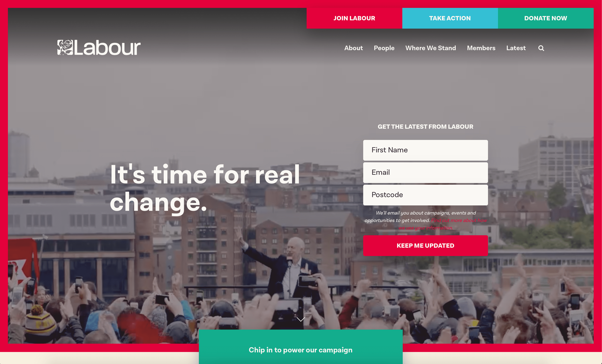

Fictional political party website
A fictional political party website based on George Orwell’s novel 1984 and the mentality and agenda of Ingsoc and the Party.
ABOUT THE PROJECT
The project presents what would be the Party's website if the web existed in the novel's time. Aligning with other typical political websites (which I've studied prior to designing mine), this website advertises the Party as a political candidate, presenting it's manifesto, members, history, political goals, while encouraging the audience to vote, support or join in.
INSPIRATION
The design and structure of the site were inspired by other real political websites such as UK's Conservative party and the Labour Party. Moreover, I briefly researched the theory behind political parties by reading a study The Role of a Political Party Website: Lessons Learnt from the User Perspective.

The UK Labour Party website
The UK Labour Party website
AUDIENCE, STAKEHOLDERS AND OBJECTIVE
The website is meant mainly to provide entertainment to readers of 1984 and others, interested in modern day politics and dystopian literature.
It may also serve as a means to compare the totalitarian regime of Ingsoc and the mindset of some real political parties nowadays. Thus, it at the same time highlights the dangers of such mentality if taken to an extreme, similarly as was the case with Orwell's objective with the novel, provoking debates about such regimes.
ACCESSIBILITY AND USABILITY
I considered the usability of my website, making it responsive, keeping the layout clear and consistent, etc. To ensure accessibility I implemented and abode by most common Web accessibility standards.
NOTE: Best viewed on Chrome.
SKILLS LEARNED AND TOOLS USED
- HTML
- CSS (advances)
- JavaScript
- jQuery
- other JavaScript libraries